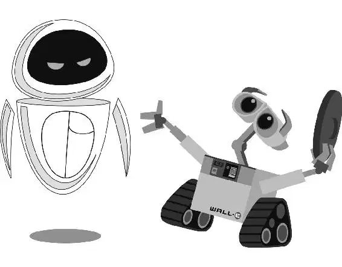

在飞船的舰桥上，傲特立正等待船长来临。伴着悬浮椅发出的“呼呼”声，船长终于进入舰桥。在瓦力疾走到别人看不到他的地方时，一个咖啡机器人从操纵台上飞了起来。
“长官。”傲特说道，眼睛一眨不眨。
“咖啡。”船长一边下令一边驶向巨大的操纵台。傲特又试了一次。“长官，年度——”船长向着傲特的方向举起手来。他调整他的椅子来移动自己庞大的身躯，差一点就能够到咖啡杯了。“注意礼节，傲特。要事先办。”他说道。他终于抓住咖啡杯，喝了一口。船长不赶时间，因为这艘巨型星际飞船不需要任何人驾驶。七百年来“功理”号一直保持着绕地球星系飞行的状态。在这个状况下，傲特控制飞船的时间远比船长多。
船长的椅子缓慢地沿着一条红线围着操纵台行驶。当他经过时面板都亮了起来。“机械系统？”感觉乏味的船长问飞船的电脑道。
“没有变化。”电脑答道。
“反应器中心温度？乘客人数？再生食物？按摩浴缸温度？垃圾排放？洗衣服务量？自助餐菜单？”
“没有变化，没有变化，没有变化。”电脑答道。船长一天的工作完成了。他正要下令开始自助餐，这时他瞄了一眼时间。他飞快地看了傲特一眼。已经过了正午！
“长官，年度侦察——”傲特开口道，他想跟船长说伊芙的事。
“12点30分？傲特，你又让我睡过头了！”船长抱怨道。
“长官——”傲特刚开了个头，船长就像个弹弓一样，“啪”的一声飞快穿过舰桥，冲向靠近泳池甲板的一侧。他低沉的声音在乘客们头上回响。
“早间播报。”船长说道。他转动操纵台上的日晷，将太阳从正午转回日出时分。他自鸣得意地笑着。这下他没有睡过头了。傲特的大眼睛翻了一下白眼。
在泳池甲板上，乘客们的午餐饮料都被自动换成了早餐饮料，但是似乎没有人在意。
现在船长出现在每个人的屏幕上，人造天空的一部分变成大型显示器来播放他的影像。
“女士们，先生们，早上好。”他说道，声音让人觉得他是兼有能力和经验的驾驶员。“欢迎进入‘功理’号五年之旅的第255 600天。”这天是“功理”号启航飞向太空七百周年纪念日！船长兴高采烈地宣布向每位乘客免费赠送一个纸杯蛋糕以示 庆祝。
船长注意到操纵台上有一个按钮在闪烁，便停顿了下来。“嗨？嗨，傲特，那个在闪的是什么键？傲特？”他问道。他的话筒仍然开着。“到底在——”幸运的是，话筒终于关掉了。
在舰桥上，船长终于注意到了伊芙。傲特正准备使她重启。
瓦力在操纵台下看到伊芙恢复了活力！她白色的蛋形外壳再次发出光芒，她温和的蓝色眼睛慢慢睁开了。
“伊——娃！”他欢乐地说道。瓦力终于追上了伊芙，而且她又重新醒了过来——活了过来！当然，他还不确定接下去该做什么。但是至少他和他真心爱恋的人在一起！
